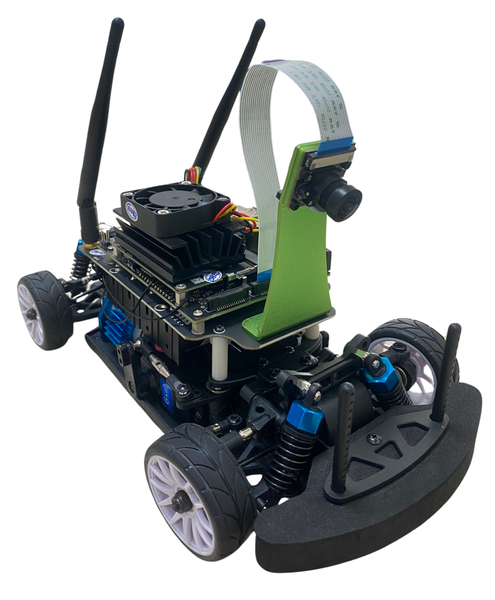
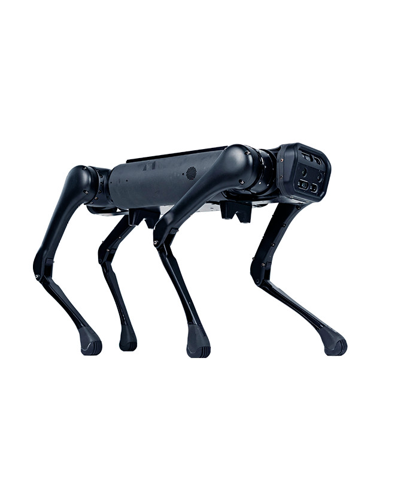

Our Projects

Autonomous driving in action on a real-world like road
Obstacle detection and collision avoidance demonstration
Self-Driving Mini-Car
Our latest project focuses on developing advanced self-driving features for a mini-car provided by WaveShare. This project aims to push the boundaries of autonomous vehicle technology in a compact form factor.
Key Features:
- Integration with WeShare's existing hardware platform
- Advanced perception systems for small-scale environments
- Adaptive navigation algorithms for real-world scenarios
- Real-time decision making and obstacle avoidance
Other Ongoing Projects

Adaptive Legged Robot
Developing a legged robot capable of navigating complex and uneven terrains.
Embodied AI Assistant
Creating an AI-powered robotic assistant for intuitive human-robot interaction.